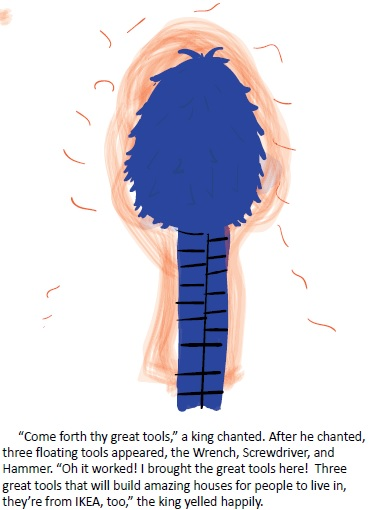
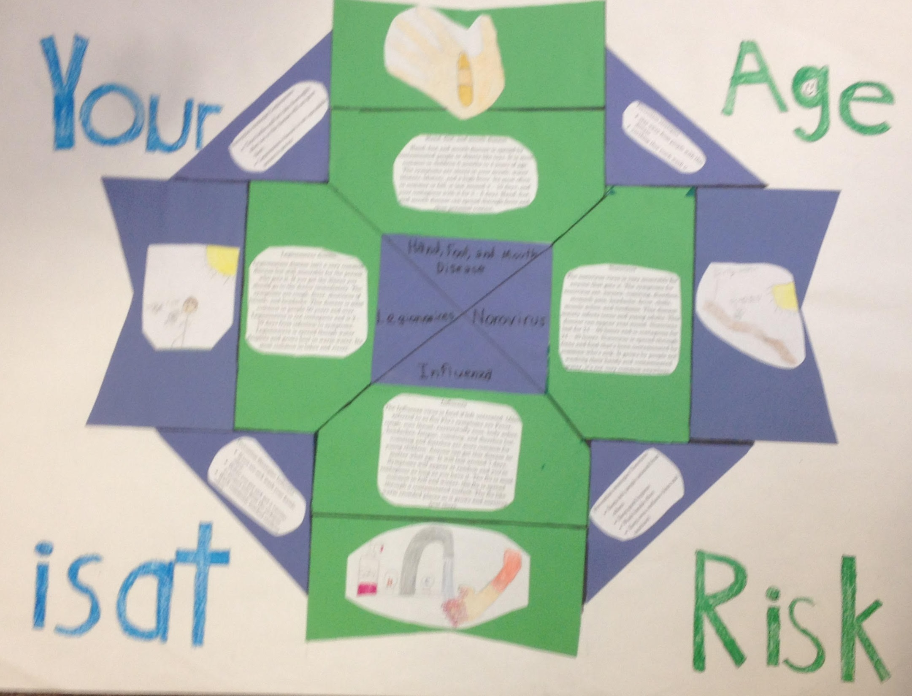

This year in 7th grade I overall grew a lot. I became a lot smarter, became more patient, started to persist more and I'm more creative. I think I work a lot more this year, and I think I try my hardest unlike last year where I didn't really care about my grades much. I've gained more quality friends that will help out when i'm in a pinch. Overall I think I became a better person and I learned to work harder.
I was an average kid when I was younger. Very dumb, I messed around and did what I wanted without question and made bad decisions. But as you can see now I at least grew a couple inches. That makes me smart right? Also, when I was younger, I wasn’t creative, I just copied everybody’s work and added my own spin on it. Now I do make my own things, I don’t copy anymore. I even think stuff through. Because of that I have improved in writing stories which led to a growth in the quality of creativity.
One of the best projects that shows how much I’ve truly grown in creativity, which helped me become better at writing, is the storybook project. This project is where we have to write a book for a 3rd – 5th graders. We had to teach people about refusal skills in a way that kids could understand. The steps of the project started with us gaining partners. We would brainstorm what the story would be like then compare it with our partners. After a bit of that we started on the first draft, which was really bad. Our first draft was nothing like the final story, some stuff just wasn’t creative at all and others just felt robotic. The original story had forgetful characters and the story wasn’t that great. We kept on with the drafts until we reached our final. But until we got there our drafts got a little better as we moved on. The story was about three weapons living through hard times, as the story came along it got better and better. The final ending up being about three building tools that have to work together to fix their problems, literally and figuratively. Our final draft had all the necessary items, which are you must use repetitive refrain, it has to be kid appropriate, and it needs to teach refusal skills in a way 3rd – 5th graders will understand. The final draft shows creativity by how we tell the story, and explain some learning skills. Some of those are circular ending which is an ending that ends the same way it starts, and also Simile which is a comparison that uses the words like or as. This is a phrase from the storybook that shows the creativity in our final. ““Come forth thy great tools,” a king chanted. After he chanted, three floating tools appeared, the Wrench, Screwdriver, and Hammer.” This is more creative than the past draft because it has characters that are greatly made, and it has an imaginative feel.
Since I have improved how good I am with writing imaginative, I have improved in creativity. Our final draft worked out fine and got us a pretty high grade. We got the creativity part of it spot on and some comedy mixed in. When I get to college or high school I’m going to need creativity in many things, such as engineering, or writing. Almost anything can be creative you just have to learn how.

Crippity croppity I'm done with this crap!
Those were basically all I would say when I couldn't do something, it's kind of a ritual to summon the crap warriors. The point I'm trying to make is I wasn't that great at persistence. I gave up whenever I didn't think I could do something. But now I actually try, at least I started to when I began the communicable disease bulletin board. Because I grew in persistence I am now better at finishing projects on time.
The communicable disease bulletin board is a poster where we explain communicable diseases, how they spread, and how to prevent them. Communicable diseases are all diseases that can be spread between people or animals. We must explain the symptoms and preventing strategies for, the communicable diseases. We should explain 4 communicable diseases in all. Throughout the beginning of this project I got a partner who helped a bunch with all the drafts, but when the time came for the final he left for vacation. The only way to finish on time was to be persistent. All the drafts except the final I wasn't persistent, I goofed off and didn't get much work done so we barely got done with all the drafts. When my partner left, I realized I won't finish unless I persist. So, I started to work hard and get the final mostly done. That included placement of shapes, pictures of the 4 diseases, and figuring out what the color scheme should be. The color scheme was simple because I just had to text my partner and ask him, but the placement of the shape was the really hard. They had to have rotational symmetry, which is very hard to get a good shape that fits the pictures and some text. Rotational symmetry is where the shape is the same no matter how you turn it. I talked to the teacher and got an extension. My partner got back from his trip during the extension and we barely got it done. In the end, I didn't get the final done on time even though I persisted and tried my best. But what I did learn is that I should always persist on a project even if I'll finish early.
My growth in persistence helped me get better at staying on task and finishing projects on time. What I do know now is that if I don't use persistence well, I will do terrible in almost any, and all things. Persistence will help me a lot in the future. Ever since I was young I've wanted to be an architect engineer, but to be that I'm going to have to work very hard to finish my projects on time. My sister is going to college to become an architect engineer and from what she told me is that it is very hard but if you work hard and persist, it will always be worth it.
